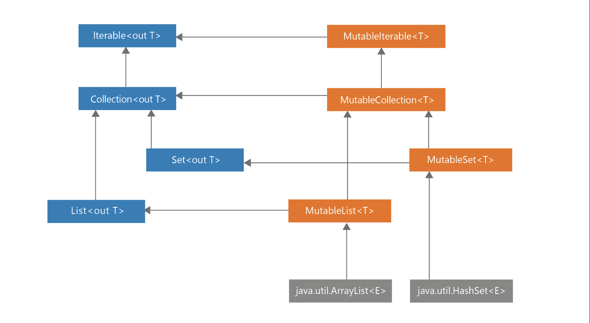
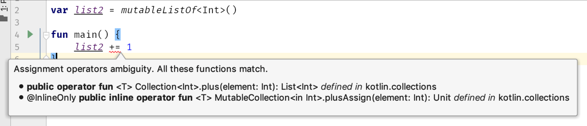

在kotlin中，我们设计一段代码，每段代码由不同的元素组成。例如类、对象、函数、类型别名和顶级属性。其中一些元素可以保存状态，例如通过具有可读写属性的var或一个可变对象。
var a = 10
val list: MutableList<Int> = mutableListOf()
当一个元素保存信息状态时，它的调用结果不仅取决于您如何使用它，还取决于它之前被如何使用。一个典型的例子如下，带有存款余额的账户。
class BankAccount {
var balance = 0.0
private set
fun deposit(depositAmount: Double) {
balance += depositAmount
}
@Throws(InsufficientFunds::class)
fun withdraw(withdrawAmount: Double) {
if (balance < withdrawAmount) {
throw InsufficientFunds()
}
balance -= withdrawAmount
}
}
class InsufficientFunds : Exception()
val account = BankAccount()
println(account.balance) // 0.0
account.deposit(100.0)
println(account.balance) // 100.0
account.withdraw(50.0)
println(account.balance) // 50.0
Here BankAccount has a state that represents how much money is present on that account. Holding state is a double-edged sword. On one hand it is very useful because it makes it possible to represent elements changing over time, but on the other hand state management is hard, because: 这里BankAccount有一个值，表示该账户上存在多少钱。持有这个值是一把双刃剑。一方面，它非常有用，因为它可以表示随时间变化的元素，但另一方面，状态管理很难，原因如下:
It is harder to understand and debug a program with many mutating points. The relationship between these mutations needs to be understood, and it is harder to track how they changed when there are more of them. A class with many mutating points that depend on each other is often really hard to understand and to modify. It is especially problematic in case of unexpected situations or errors.
有许多突变点的程序更难理解和调试。这些突变之间的关系需要被理解，而且当它们的数量更多时，很难追踪它们是如何变化的。具有许多相互依赖的突变点的类通常很难理解和修改。在出现意想不到的情况或错误时，它尤其有问题。
Mutability makes it harder to reason about the code. State of immutable element is clear. Mutable state is much harder to comprehend. It is harder to reason what is its value as it might change at any point and just because we checked in some moment it doesn’t mean it is still the same.
易变性使得对代码进行推理变得更加困难。不可变元素的状态是清晰的。可变状态更难理解。很难推断它的值是多少，因为它可能会在任何时候改变，仅仅因为我们在某个时刻检查它并不意味着它仍然是相同的。
It requires proper synchronization in multithreaded programs.Every mutation is a potential conflict.
在多线程程序中需要适当的同步。每一个突变都是潜在的冲突。
Mutable elements are harder to test. We need to test every possible state, and the more mutability, the more states there are to test. What is more, the number of states we need to test generally grows exponentially with the number of mutation points in the same object or file, as we need to test all different combinations of possible states.
- 可变元素更难测试。我们需要测试所有可能的状态，而可变性越大，需要测试的状态就越多。更重要的是，我们需要测试的状态的数量通常随着同一对象或文件中突变点的数量呈指数增长，因为我们需要测试所有可能状态的不同组合。
- When state mutates, often some other classes need to be notified about this change. For instance, when we add a mutable element to a sorted list, once the element is changed, we need to sort this list again.
- 当状态发生变化时，通常需要通知其他一些类。例如，当我们向一个已排序的列表中添加一个可变的元素时，一旦元素发生改变，我们就需要再次对这个列表进行排序。
Problems with state consistency and the growing complexity of the project with more mutation points are familiar for developers working in bigger teams. Let’s see an example of how hard it is to manage shared state. Take a look at the below snippet⁶. It shows multiple threads trying to modify the same property, however because of conflicts some of those operations will be lost. 状态一致性的问题，以及项目复杂性的增长，以及更多的突变点，对于在更大的团队中工作的开发人员来说是很熟悉的。让我们看一个例子，看看管理共享状态有多难。看看下面的代码片段⁶。它显示了试图修改相同属性的多个线程，但是由于冲突，其中一些操作将丢失。
var num = 0
for (i in 1..1000) {
thread {
Thread.sleep(10)
num += 1
}
}
Thread.sleep(5000)
print(num) // Very unlikely to be 1000
// Every time a different number
当我们使用Kotlin协程时，会有更少的冲突，因为涉及的线程更少，但它们仍然会发生
suspend fun main() {
var num = 0
coroutineScope {
for (i in 1..1000) {
launch {
delay(10)
num += 1
}
}
}
print(num) // Every time a different number
}
In real-life projects, we generally cannot just lose some operations, and so we need to implement proper synchronization like the one presented below. Although implementing proper synchronization is hard, and the more mutation points we have, the harder it is. Limiting mutability does help. 在现实的项目中，我们通常不能不去做一些必要的操作，因为很多时候我们需要实现适当的同步，就像下面介绍的那样。尽管实现适当的同步很困难，而且突变点越多，同步就越困难。所以限制可变性就很重要。
val lock = Any()
var num = 0
for (i in 1..1000) {
thread {
Thread.sleep(10)
synchronized(lock) {
num += 1
}
}
}
Thread.sleep(1000)
print(num) // 1000
The drawbacks of mutability are so numerous that there are languages that do not allow state mutation at all. These are purely functional languages. One well-known example is Haskell. Such languages are rarely used for mainstream development though, since it’s very hard to do programming with so limited mutability. Mutating state is a very useful way to represent the state of real-world systems. I recommend using mutability, but do it sparingly and wisely decide where our mutating points should be. The good news is that Kotlin supports limiting mutability well.
可变性的缺点是如此之多，以至于有些语言根本不允许状态突变。这些都是纯粹的函数式语言。Haskell就是一个著名的例子。尽管如此，这种语言很少用于主流开发，因为使用如此有限的可变性很难进行编程。突变状态是表示真实世界系统状态的一种非常有用的方法。我建议使用可变性，但要谨慎使用，并明智地决定我们的突变点应该在哪里。好消息是Kotlin很好地支持限制可变性。
Limiting mutability in Kotlin
限制kotlin的可变性
Kotlin is designed to support limiting mutability. It is easy to make immutable objects or to keep properties immutable. It is a result of many features and characteristics of this language, but the most important ones are: Kotlin被设计用来支持有限的可变性。创建不可变对象或保持属性不可变是很容易的。这是该语言许多特性和特点的结果，但最重要的是:
- Read-only properties val
只读属性val
Separation between mutable and read-only collections
可变集合和只读集合之间的分离
copy in data classes
- 在数据类中复制
Let’s discuss them one by one. 让我们一个个的讨论他们
Read-only properties val
In Kotlin we can make each property read-only val (like value) or read-write var (like variable). Read-only properties val do not allow setting: 在Kotlin中，我们可以将每个属性设置为只读val(类似值)或读写var(类似变量)。只读属性val不允许设置:
val a = 10
a = 20 // ERROR
Notice though that read-only properties are not necessarily immutable nor final. A read-only property can hold a mutable object: 不过请注意，只读属性不一定是不可变的，也不一定是最终的。只读属性可以保存可变对象:
val list = mutableListOf(1,2,3)
list.add(4)
print(list) // [1, 2, 3, 4]
A read-only property can also be defined using a custom getter that might depend on another property: 只读属性也可以使用可能依赖于另一个属性的自定义getter来定义:
var name: String = "Marcin"
var surname: String = "Moskała"
val fullName
get() = "$name $surname"
fun main() {
println(fullName) // Marcin Moskała
name = "Maja"
println(fullName) // Maja Moskała
}
Notice that it is possible because when we define a custom getter, it will be called every time we ask for the value. 注意，这是可能的，因为当我们定义一个自定义getter时，每次我们请求值时，它都会被调用。
fun calculate(): Int {
print("Calculating... ")
return 42
}
val fizz = calculate() // Calculating...
val buzz
get() = calculate()
fun main() {
print(fizz) // 42
print(fizz) // 42
print(buzz) // Calculating... 42
print(buzz) // Calculating... 42
}
This trait, that properties in Kotlin are encapsulated by default and they can have custom accessors (getters and setters) is very important in Kotlin because it gives us flexibility when we change or define our API. It will be described in detail in Item 16: Properties should represent state, not behavior. The core idea though is that val do not offer mutation points because it is only a getter under the hood when var is both getter and setter. That’s why we can override val with var:
Kotlin中的属性是默认封装的，它们可以有自定义的访问器(getter和setter)，这在Kotlin中非常重要，因为当我们更改或定义API时，它给了我们灵活性。这将在第16项中详细描述:属性应该表示状态，而不是行为。但其核心思想是val不提供突变点，因为当var同时是getter和setter时，它只是一个底层的getter。这就是为什么我们可以用var覆盖val:
interface Element {
val active: Boolean
}
class ActualElement: Element {
override var active: Boolean = false
}
Values of read-only properties val can change, but such properties do not offer a mutation point which is the main source of problems when we need to synchronize or reason about a program. This is why we generally prefer val over var.
Although remember that val doesn’t mean immutable. It can be defined by getter or delegate. This fact gives us more freedom to change. Though when we don’t need that, final properties should be preferred. It is easier to reason about them as they have the state stated next to their definition. They are also better supported in Kotlin. For instance, they can be smart-casted:
只读属性val的值可以改变，但这样的属性不提供突变点，这是当我们需要同步或推理程序时问题的主要来源。这就是为什么我们通常更喜欢val而不是var。 记住val并不意味着不可变。它可以由getter或delegate定义。这一事实给了我们更多的改变的自由。尽管当我们不需要它时，最终属性应该是首选。因为它们的定义旁边标明了状态，所以更容易对它们进行推理。他们在Kotlin也得到了更好的支持。例如，他们可以
val name: String? = "Márton"
val surname: String = "Braun"
val fullName: String?
get() = name?.let { "$it $surname" }
val fullName2: String? = name?.let { "$it $surname" }
fun main() {
if (fullName != null) {
println(fullName.length) // ERROR
}
if (fullName2 != null) {
println(fullName2.length) // Márton Braun
}
}
Smart cast is impossible for fullName because it is defined using getter, so it might give a different value during check and different later during use (for instance, if some other thread would set name). Non-local properties can be smart-casted only when they are final and do not have custom getter.
fullName的智能转换是不可能的，因为它是用getter定义的，所以它可能在检查时给出一个不同的值，在以后的使用中也会不同(例如，如果其他线程设置了name)。非本地属性只有在它们是final且没有自定义getter时才能被智能强制转换。
Separation between mutable and read-only collections
可变和只读集合的分离
Similarly, as Kotlin separates read-write and read-only properties, Kotlin separates read-write and read-only collections. This is achieved thanks to the way the hierarchy of collections was designed. Take a look at the diagram presenting collections hierarchy in Kotlin. On the left side, you can see the Iterable, Collection, Set, and List interfaces that are read-only. This means that they do not have any methods that would allow modification. On the right side, you can see the MutableIterable, MutableCollection, MutableSet, and MutableList interfaces that represent mutable collections. Notice that each mutable interface extends the corresponding read-only interface, and adds methods that allow mutation. This is similar to how properties work. A read-only property means just a getter, while a read-write property means both a getter and a setter.
类似地，Kotlin将读写和只读属性分开，Kotlin也将读写和只读集合分开。这要归功于集合层次结构的设计方法。看一下在Kotlin中展示集合层次结构的图。您可以看到Iterable、Collection、Set和List接口，它们是只读的。这意味着它们没有任何允许修改的方法。在右侧，您可以看到MutableIterable、MutableCollection、MutableSet和MutableList接口，它们表示可变集合。

Read-only collections are not necessarily immutable. Very often they are mutable, but they cannot be mutated because they are hidden behind read-only interfaces. For instance, the Iterable
只读集合不一定是不可变的。它们通常是可变的，但不能被改变，因为它们隐藏在只读接口后面。例如，Iterable
inline fun <T, R> Iterable<T>.map(
transformation: (T) -> R
): List<R> {
val list = ArrayList<R>()
for (elem in this) {
list.add(transformation(elem))
}
return list
}
The design choice to make these collection interfaces read-only instead of truly immutable is very important. It gives us much more freedom. Under the hood, any actual collection can be returned as long as it satisfies the interface. Therefore, we can use platform-specific collections.
将这些集合接口变为只读而不是真正不可变的设计选择是非常重要的。它给了我们更多的自由。在引擎盖下，只要满足接口，任何实际的集合都可以返回。因此，我们可以使用特定于平台的集合。
The safety of this approach is close to the one achieved from having immutable collections. The only risk is when a developer tries to “hack the system” and performs down-casting. This is something that should never be allowed in Kotlin projects. We should be able to trust that when we return a list as read-only, it will be used only to read it. This is part of the contract. More about it on Part 2 of this book.
这种方法的安全性接近于使用不可变集合所获得的安全性。唯一的风险是当开发人员试图“黑进系统”并执行向下casting时。这在Kotlin项目中是绝对不允许的。我们应该能够相信，当我们返回一个只读列表时，它将只用于读取它。这是合同的一部分。关于它的更多内容，请参阅本书的第二部分。
Down-casting collections is not only breaking their contract and depending on implementation instead of abstraction as we should, but it is also insecure and can lead to surprising consequences. Take a look at this code:
集合向下转换不仅破坏了它们的规则，而且我们应该依赖于实现，而不是依赖抽象，而且它也不安全，并可能导致令人惊讶的后果。看看这段代码:
val list = listOf(1,2,3)
// DON’T DO THIS!
if (list is MutableList) {
list.add(4)
}
The result of this operation is platform-specific. On the JVM listOf returns an instance of Arrays.ArrayList that implements Java List interface. This Java List interface has methods like add or set, and so it translates to the Kotlin MutableList interface. However, Arrays.ArrayList does not implement some of those operations. This is why the result of the above code is the following:
此操作的结果是特定于平台的。在JVM的listOf中返回array的一个实例。实现Java List接口的数组列表。这个Java List接口有添加或设置等方法，因此它转换为Kotlin MutableList接口。然而,数组。ArrayList没有实现其中的一些操作。这就是为什么上面代码的结果如下:
Exception in thread “main” java.lang.UnsupportedOperationException
at java.util.AbstractList.add(AbstractList.java:148)
at java.util.AbstractList.add(AbstractList.java:108)
Though there is no guarantee how this will behave in a year from now. Underlying collections might change. They might be replaced with truly immutable collections implemented in Kotlin and not implementing MutableList at all. Nothing is guaranteed. This is why down-casting read-only collections to mutable should never take place in Kotlin. If you need to change from read-only to mutable, you should use List.toMutableList function, which creates a copy that you can then modify:
虽然不能保证一年后更新什么。底层集合可能会改变。它们可能被Kotlin中实现的真正的不可变集合所替代，而根本不实现MutableList。没有什么是可靠的。这就是为什么在Kotlin中不应该将只读集合向下转换为可变集合的原因。如果需要从只读更改为可变，则应该使用List。toMutableList函数，它创建一个你可以修改的副本:
val list = listOf(1, 2, 3)
val mutableList = list.toMutableList()
mutableList.add(4)
This way does not break any contract, and it is also safer for us as we can feel safe that when we expose something as List it won’t be modified from outside.
这种方式不会破坏任何规则，而且对我们来说也更安全，因为当我们将某些内容暴露为List时，它不会从外部被修改。
Copy in data classes
复制数据类
There are many reasons to prefer immutable objects - objects that do not change their internal state, like String or Int. In addition to the already named reasons why we generally prefer less mutability, immutable objects have their own advantages:
使用不可变对象(不改变其内部状态的对象，如String或Int)有很多原因。除了已经命名的原因，我们通常更喜欢更少的可变性，不可变对象有其自身的优势:
- They are easier to reason about since their state stays the same once they are created.
- 它们更容易推理，因为它们的状态在创建后保持不变。//推理啥意思呢
- Immutability makes it easier to parallelize the program as there are no conflicts among shared objects.
- 不可变性使得保证并发安全变得更容易，因为共享对象之间不存在冲突。
- References to immutable objects can be cached as they are not going to change.
- 对不可变对象的引用可以被缓存，因为它们不会改变。
- We do not need to make defensive copies on immutable objects. When we do copy immutable objects, we do not need to make it a deep copy.
- 我们不需要对不可变对象进行防御性复制。当复制不可变对象时，不需要将其作为深度复制。
- Immutable objects are the perfect material to construct other objects. Both mutable and immutable. We can still decide where mutability takes place, and it is easier to operate on immutable objects.
- 不可变对象是构造其他对象的完美材料。可变的和不可变的。我们仍然可以决定在哪里发生可变性，而且操作不可变对象也更容易。
- We can add them to set or use them as keys in maps, in opposition to mutable objects that shouldn’t be used this way. This is because both those collections use hash table under the hood in Kotlin/JVM, and when we modify elements already classified to a hash table, its classification might not be correct anymore and we won’t be able to find it. This problem will be described in detail in Item 41: Respect the contract of hashCode. We have a similar issue when a collection is sorted.
- 我们可以添加它们来设置或使用它们作为映射中的键，与不应该这样使用的可变对象相反。这是因为这两个集合在Kotlin/JVM中都使用哈希表，当我们修改已经分类到哈希表的元素时，它的分类可能不再正确，我们将无法找到它。这个问题将在Item 41: Respect the contract of hashCode中详细描述。在对集合进行排序时，我们也会遇到类似的问题。
val names: SortedSet<FullName> = TreeSet()
val person = FullName("AAA", "AAA")
names.add(person)
names.add(FullName("Jordan", "Hansen"))
names.add(FullName("David", "Blanc"))
print(names) // [AAA AAA, David Blanc, Jordan Hansen]
print(person in names) // true
person.name = "ZZZ"
print(names) // [ZZZ AAA, David Blanc, Jordan Hansen]
print(person in names) // false”
At the last check, collection returned false even though that person is in this set. It couldn’t be found because it is in an incorrect position. 在最后一次检查时，集合返回false，即使该人在这个集合中。找不到，因为位置不对。
As you can see, mutable objects are more dangerous and less predictable. On the other hand, the biggest problem of immutable objects is that data sometimes needs to change. The solution is that the immutable objects should have methods that produce an object after some change. For instance, Int is immutable, and it has many methods like plus or minus that do not modify it but instead return a new Int after this operation. Iterable is read-only, and collection processing functions like map or filter do not modify it, but instead return a new collection. The same can be applied to our immutable objects. For instance, let’s say that we have an immutable class User and we need to allow its surname to change. We can support it with a withSurname method that produces a copy with a particular property changed:
正如您所看到的，可变对象更危险，更难以预测。另一方面，不可变对象的最大问题是数据有时需要更改。解决方案是，不可变对象应该有一些方法，这些方法可以在一些更改之后生成对象。例如，Int是不可变的，它有许多方法，如加号或减号，这些方法不会修改Int，而是在此操作后返回一个新的Int。Iterable是只读的，集合处理函数如map或filter不会修改它，而是返回一个新的集合。同样的道理也适用于我们的不可变对象
class User(
val name: String,
val surname: String
) {
fun withSurname(surname: String) = User(name, surname)//返回一个全新的
}
var user = User("Maja", "Markiewicz")
user = user.withSurname("Moskała")
print(user) // User(name=Maja, surname=Moskała)
Writing such functions is possible, but also tedious if we need one for every property. Here comes the data modifier to the rescue. One of the methods it generates is copy. It creates a new instance where all primary constructor properties are the same as in the previous one by default. New values can be specified as well. copy together with other methods generated by data modifier are described in detail in Item 37: Use data modifier to represent a bundle of data. Here is a simple example showing how it works:
编写这样的函数是可能的，但如果每个属性都需要一个函数，那么编写这样的函数也会很繁琐。这里是数据修饰符的拯救。它生成的方法之一是复制。它创建一个新实例，其中所有主构造函数属性默认与前一个相同。也可以指定新的值。copy与数据修饰符生成的其他方法一起在第Item 37: Use data modifier to represent a bundle of data中详细描述。下面是一个简单的例子，展示了它是如何工作的:
data class User(
val name: String,
val surname: String
)
var user = User("Maja", "Markiewicz")
user = user.copy(surname = "Moskała")
print(user) // User(name=Maja, surname=Moskała)
This is an elegant and universal solution that supports making data model classes immutable. Surely, this way is less efficient than just using a mutable object instead, but it has all described advantages of immutable objects and should be preferred by default.
这是一种优雅而通用的解决方案，它支持使数据模型类不可变。当然，这种方式比仅仅使用可变对象的效率要低，但它具有不可变对象所描述的所有优点，默认情况下应该是首选。
Different kinds of mutation points
两种类型的不同点
Let’s say that we need to represent a mutating list. There are two ways we can achieve that. Either by using a mutable collection or by using read-write property var: 假设我们需要表示一个变异列表。有两种方法可以实现这一目标。可以使用可变集合，也可以使用可读写属性var:
val list1: MutableList<Int> = mutableListOf()
var list2: List<Int> = listOf()
Both properties can be modified, but in different ways: 两种属性都可以被修改，用不同的方式
list1.add(1)
list2 = list2 + 1
Both of these ways can be replaced with the plus-assign operator as well, but each of them is translated into a different behavior: 两种方式都可以使用加号操作符，但是其本质行为是不一样的
list1 += 1 // Translates to list1.plusAssign(1)
list2 += 1 // Translates to list2 = list2.plus(1)
Both those ways are correct and they both have their pros and cons. They both have a single mutating point, but it is located in a different place. In the first one mutation takes place on the concrete list implementation. We might depend on the fact that it has proper synchronization in case of multithreading, but such an assumption is also dangerous since it is not really guaranteed. In the second one, we need to implement the synchronization ourselves, but the overall safety is better because the mutating point is only a single property. Though, in case of a lack of synchronization, remember that we can still lose some elements:
两种方式都是正确的并且都有着他们的优点和缺点。他们都有值的变化节点，但位于不同的地方。第一个例子，对象的变化发生在list实例上、我们可能依赖于它在多线程的情况下有适当的同步这一事实，但这样的假设也是危险的，因为它并不是真正保证的。在第二种方法中，我们需要自己实现同步，但是总体安全性更好，因为突变点只是一个单独的属性。尽管如此，在缺少同步的情况下，请记住我们仍然会丢失一些元素:
ar list = listOf<Int>()
for (i in 1..1000) {
thread {
list = list + i
}
}
Thread.sleep(1000)
print(list.size) // Very unlikely to be 1000,
// every time a different number, like for instance 911
Using a mutable property instead of a mutable list allows us to track how this property changes when we define a custom setter or using a delegate (which is using a custom setter). For instance, when we use an observable delegate, we can log every change of a list: 使用可变属性而不是可变列表允许我们在定义自定义setter或使用委托(使用自定义setter)时跟踪该属性的变化。例如，当我们使用可观察委托时，我们可以记录列表的每一个变化:
var names by Delegates.observable(listOf<String>()) { _, old, new ->
println("Names changed from $old to $new")
}
names += "Fabio"
// Names changed from [] to [Fabio]
names += "Bill"
// Names changed from [Fabio] to [Fabio, Bill]”
To make this possible for a mutable collection, we would need a special observable implementation of the collection. For read-only collections on mutable properties, it is also easier to control how they change - there is only a setter instead of multiple methods mutating this object, and we can make it private:
为了使可变集合成为可能，我们需要该集合的特殊可观察实现。对于可变属性上的只读集合，控制它们如何改变也更容易——只有一个setter而不是多个方法改变了这个对象，我们可以将它设为私有:
var announcements = listOf<Announcement>()
private set
In short, using mutable collections is a slightly faster option, but using a mutable property instead gives us more control over how the object is changing. 简而言之，使用可变集合是一种稍微快一点的选择，但是使用可变属性可以让我们对对象的变化方式有更多的控制。
Notice that the worst solution is to have both a mutating property and a mutable collection: 注意，最糟糕的解决方案是同时拥有一个可变属性和一个可变集合:
// Don’t do that
var list3 = mutableListOf<Int>()
We would need to synchronize both ways it can mutate (by property change and by internal state change). Also, changing it using plus-assign is impossible because of ambiguity:
我们需要同步这两种可能发生变化的方式(通过属性变化和内部状态变化)。此外，由于模糊性，使用plus-assign来改变它是不可能的:

The general rule is that one should not create unnecessary ways to mutate state. Every way to mutate state is a cost. It needs to be understood and maintained. We prefer to limit mutability.
一般的规则是，不应该创建不必要的方法来改变状态。任何改变状态的方法都是有代价的。它需要被理解和维护。我们倾向于限制可变性。
Do not leak mutation points
请勿泄漏突变点
It is an especially dangerous situation when we expose a mutable object that makes up state. Take a look at this example: 当我们公开组成状态的可变对象时，这是一种特别危险的情况。看看这个例子:
data class User(val name: String)
class UserRepository {
private val storedUsers: MutableMap<Int, String> =
mutableMapOf()
fun loadAll(): MutableMap<Int, String> {
return storedUsers
}
//...
}
One could use loadAll to modify UserRepository private state:
可以使用loadAll来修改UserRepository的私有状态:
val userRepository = UserRepository()
val storedUsers = userRepository.loadAll()
storedUsers[4] = "Kirill"
//...
print(userRepository.loadAll()) // {4=Kirill}
It is especially dangerous when such modifications are accidental. There are two ways how we can deal with that. The first one is copying returned mutable objects. We call that defensive copying. This can be a useful technique when we deal with a standard objects and here copy generated by data modifier can be really helpful:
如果这种改变是偶然的，就特别危险。有两种方法可以解决这个问题。第一个是复制返回的可变对象。我们称之为防御性复制。当我们处理标准对象时，这是一种有用的技术，这里由data modifier生成的副本非常有用:
class UserHolder {
private val user: MutableUser()
fun get(): MutableUser {
return user.copy()
}
//...
}
Though whenever possible we prefer limiting mutability, and for collections we can do that by upcasting those objects to their read-only supertype: 不过只要有可能，我们更喜欢限制可变性，对于集合，我们可以通过将这些对象向上转换为它们的只读超类型来实现:
data class User(val name: String)
class UserRepository {
private val storedUsers: MutableMap<Int, String> =
mutableMapOf()
fun loadAll(): Map<Int, String> {
return storedUsers
}
//...
}
Summary
In this chapter we’ve learned why it is important to limit mutability and to prefer immutable objects. We’ve seen that Kotlin gives us a lot of tools that support limiting mutability. We should use them to limit mutation points. Simple rules are: 在本章中，我们学习了为什么限制可变性和选择不可变对象是重要的。我们已经看到Kotlin为我们提供了许多支持限制可变性的工具。我们应该用它们来限制突变点。简单的规则是:
- Prefer val over var.
- 更多的使用val 而不是var
- Prefer an immutable property over a mutable one.
- 最好使用不可变属性而不是可变属性
- Prefer objects and classes that are immutable over mutable.
- 优先选择不可变的对象和类而不是可变的。
- If you need them to change, consider making them immutable data classes, and using copy.
- 如果需要更改它们，请考虑将它们设置为不可变数据类，并使用copy。
- When you hold state, prefer read-only over mutable collections.
- 当您保存状态时，最好是只读而不是可变集合。
- Design your mutation points wisely and do not produce unnecessary ones.
- 明智地设计你的突变点，不要产生不必要的突变点。
- Do not expose mutable objects.
- 不要暴露可变对象。
There are some exceptions to these rules. Sometimes we prefer a mutable object because they are more efficient. Such optimizations should be preferred only in the performance critical parts of our code (Part 3: Efficiency) and when we use them, we need to remember that mutability requires more attention when we prepare it for multithreading. The baseline is that we should limit mutability.
这些规则也有一些例外。有时我们更喜欢可变对象，因为它们更高效。这种优化应该只适用于代码的性能关键部分(第3部分:效率)，当我们使用它们时，我们需要记住，在为多线程准备可变性时需要更多的注意。底线是我们应该限制可变性。